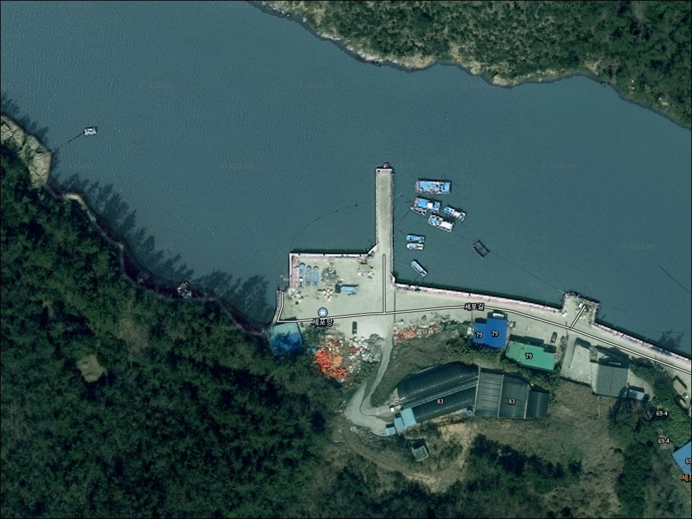
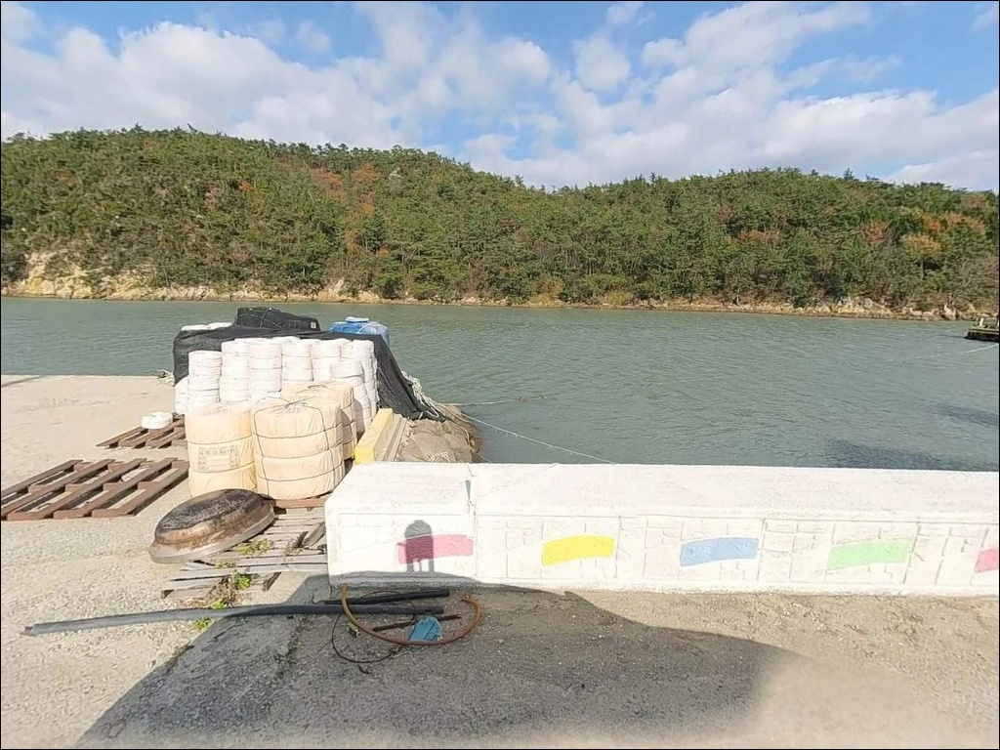
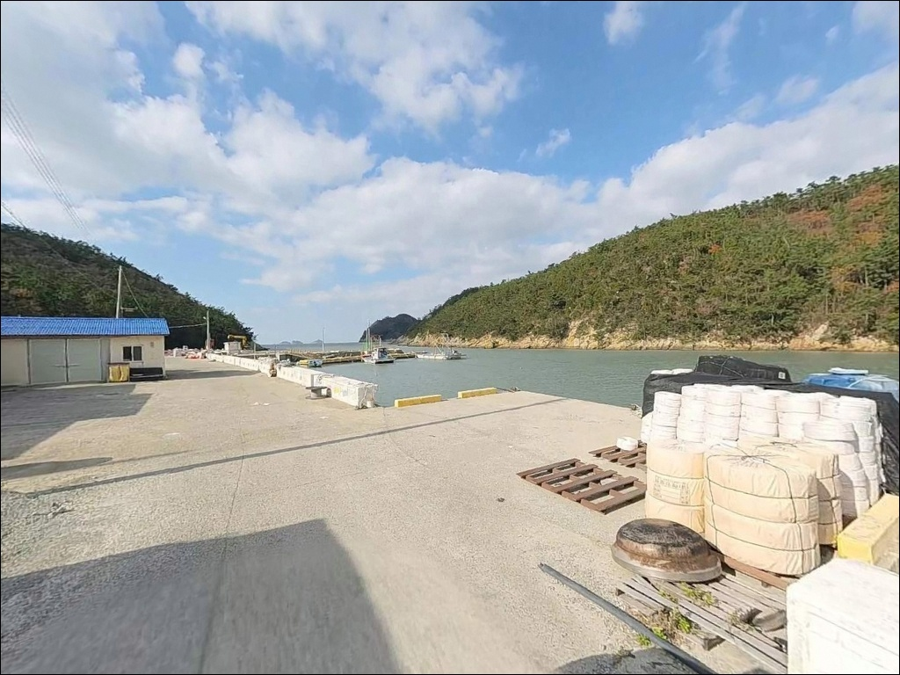
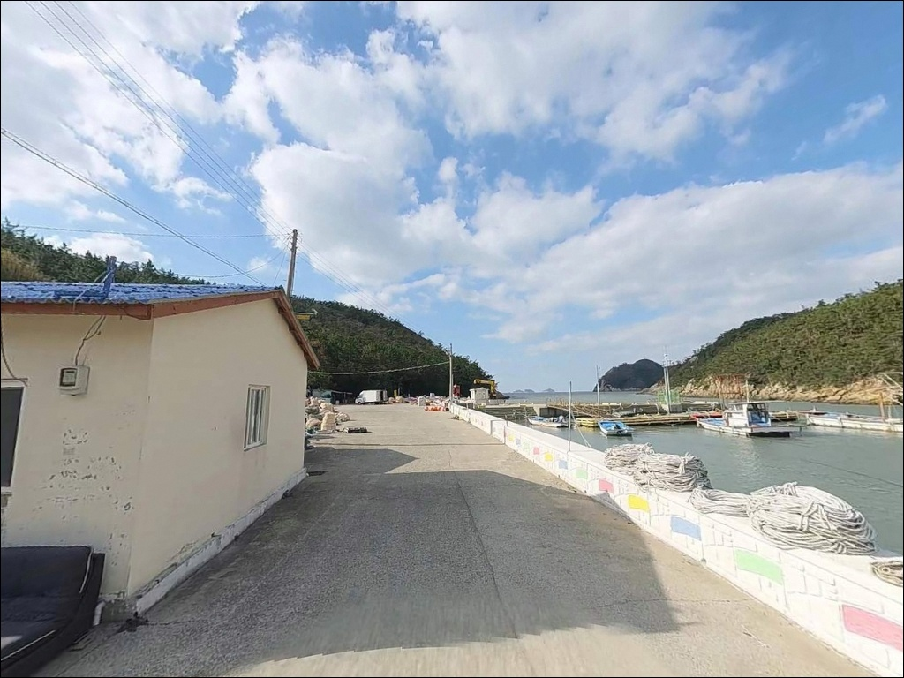
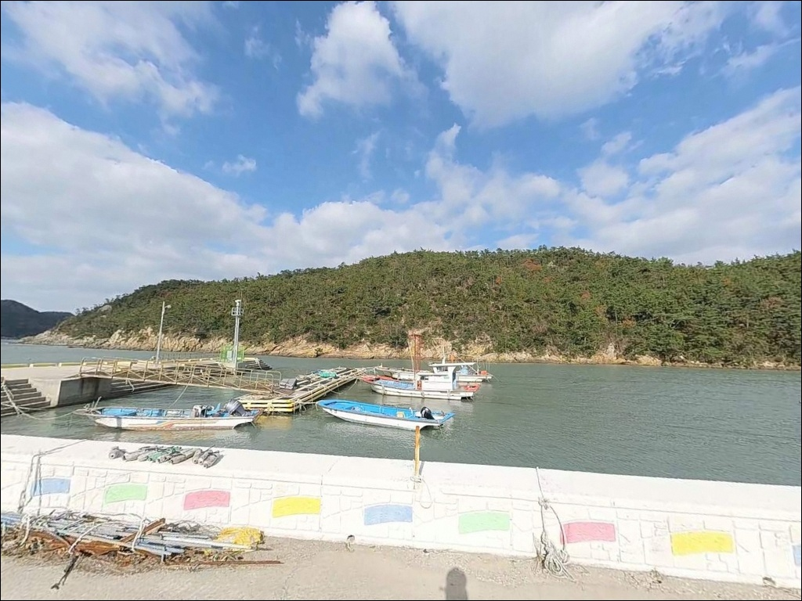
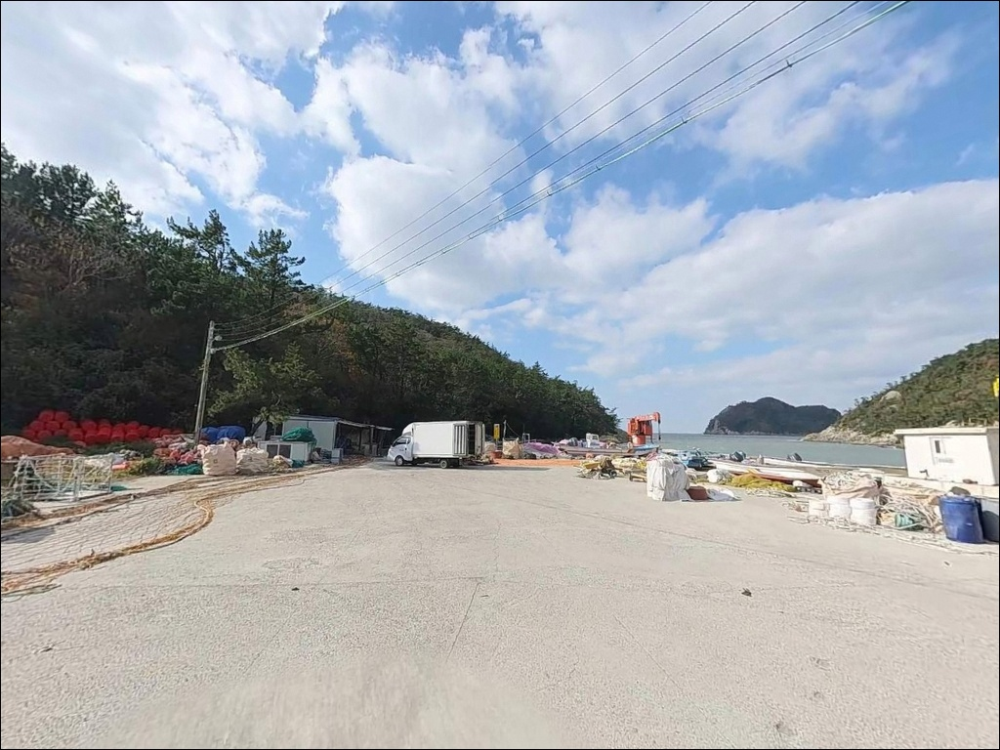
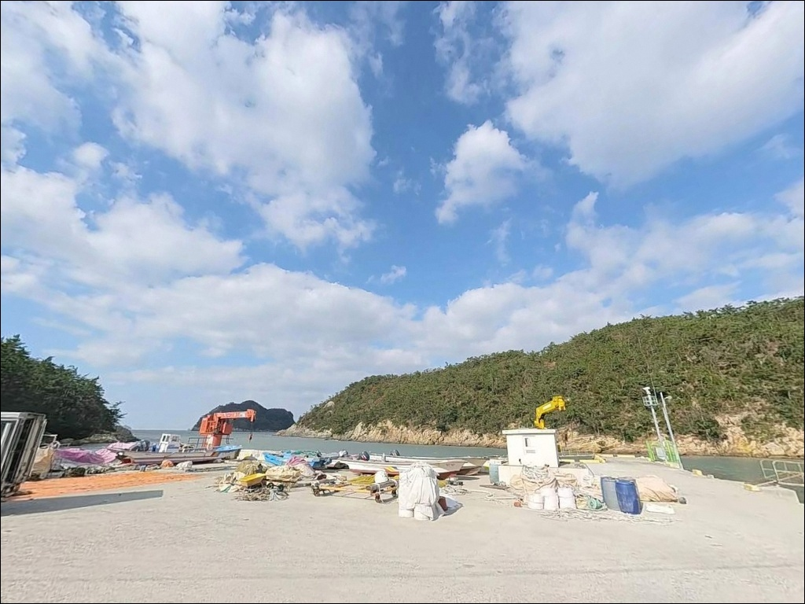
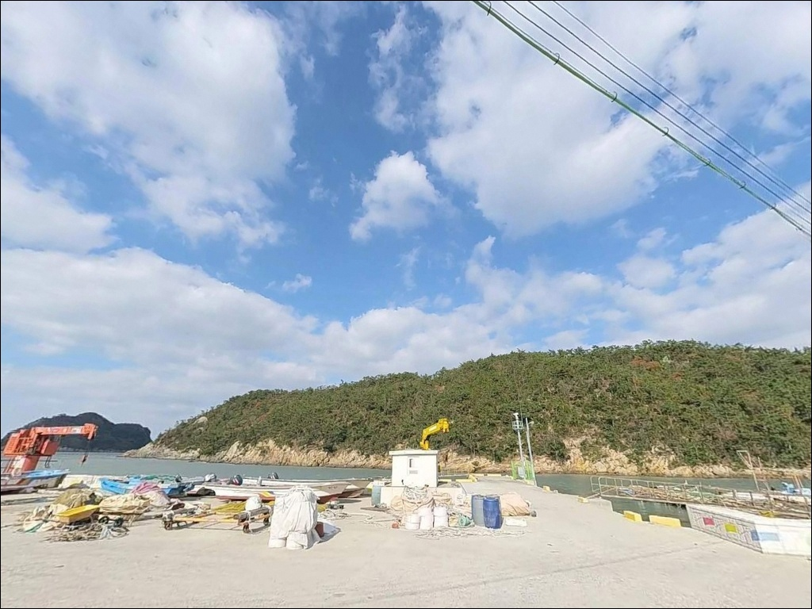
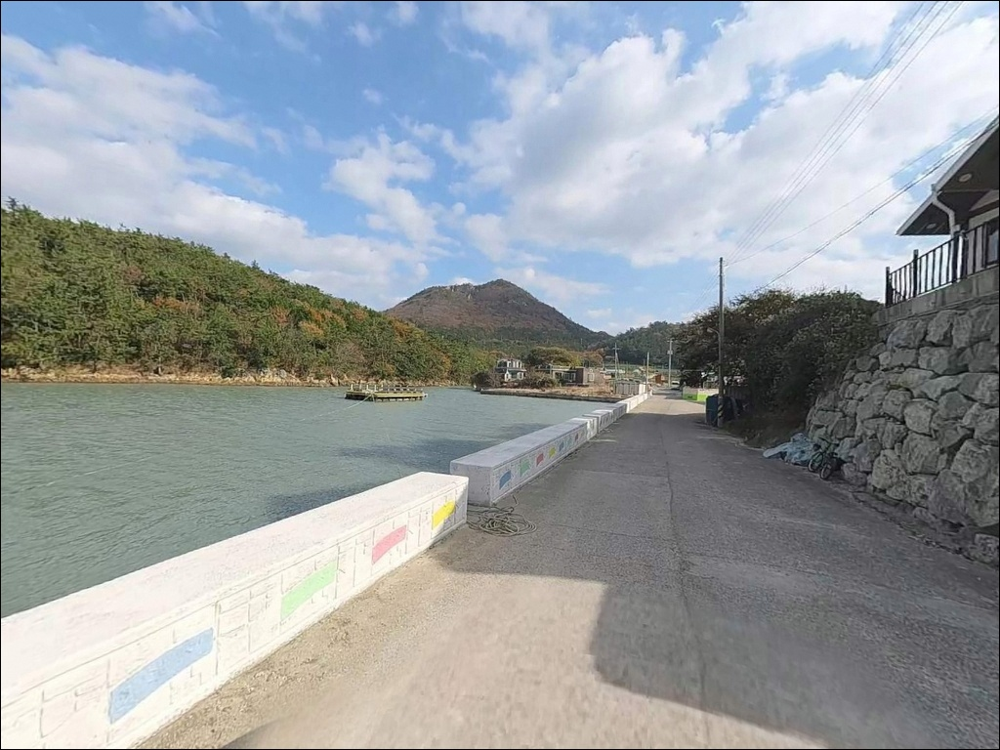

세포항(세포방파제), 진도 전남 진도군 바다와 가장 가까이 머무는 차박, 낚시 해안 명소
이 페이지에는 광고(제휴 링크 포함)가 있으며, 광고 링크를 통해 구매하면 운영자가 판매 수익 또는 수수료를 받을 수 있습니다. 포인트 사진: 카카오맵 스카이뷰·로드뷰. 이 페이지의 지도·사진 이미지는 카카오맵의 실제 서비스 이미지와 다를 수 있습니다.


포인트 안내
세포항(세포방파제)
전남 진도군 지산면 가학리 629-20
내항 쪽에 자리를 잡으면 간조 시점에
수심이 낮아져 채비를 운용할 공간 자체가
사라지는 구조입니다.
이 포인트는 외항 방향과 내항 방향의
낚시 여건 차이가 뚜렷하기 때문에
진입 전 방파제 구조 파악이 먼저입니다.
전남 진도군 지산면 가학리,
세방낙조 전망대 인근 해안선에 자리한
세포항 방파제는 진도 서남부 다도해를
정면으로 마주하는 소규모 어항입니다.
온라인에 직접 조황 기록이 거의 없는
아직 덜 알려진 포인트이며,
그만큼 직접 답사해 두면 조용히 쓸 수 있는
구조입니다.
이 글은 세포항 방파제의
진입 여건, 지형 구조, 어울리는 낚시 방식,
차박 체류 조건에 집중합니다.
조황 단정이나 특정 어종 보장은
이 글의 범위에 포함되지 않습니다.

1. 진입 동선과 포인트 접근성
세포항 방파제는 가학리 마을을 경유하는
1~2차선 혼합 도로를 통해 접근합니다.
지산면 소재지에서 해안 쪽으로 이어지는
도로 구간은 구불구불한 해안 도로 특성을
그대로 갖추고 있어,
진입 전 네비게이션 경로 외에
위성지도로 마지막 구간 폭을 확인해 두는 것이
안전합니다.
대형 SUV나 캠핑 세팅 차량이라면
포구 직전 구간의 폭이 좁을 수 있으므로
미리 확인하는 편이 좋습니다.
회차 공간이 넉넉하지 않은 소규모 어항
구조이므로, 후진 진출에 익숙하지 않은
경우라면 더 신중하게 접근해야 합니다.
주차는 방파제 입구 공터나
선착장 주변 갓길을 활용하는 방식이
일반적입니다.
어선 이동 동선과 겹치지 않는 자리를
먼저 확인하고 주차하는 것이
기본 매너입니다.

2. 차박 환경과 야간 체류 여건
세포항 방파제 주변은 민가 밀집도가 낮은
소규모 어촌 특성을 갖추고 있습니다.
야간 차량 통행이 거의 없는 편이라
조용한 환경은 기대할 수 있는 구조입니다.
다만 방파제 끝단 방향은 가로등이 이어지지
않는 어두운 구간이 포함되어 있어
개인 조명 장비는 필수입니다.
세방낙조 전망대가 인근에 있어
낮 시간대에는 관광객 차량 통행이 있는 편입니다.
야간에는 상황이 달라지므로
낚시를 마친 뒤 하룻밤 머무는 용도로는
방파제 입구 공터 주변이 현실적인 체류 공간입니다.
주차 공간 자체가 좁은 포구 구조이므로
먼저 도착해 자리를 확보하는 것이 좋습니다.
외해 방향으로 개방된 구조 특성상
바람 영향을 받는 날이 있습니다.
기상 확인 없이 무작정 입장하면
야간 체류 환경이 불편해질 수 있으므로,
출발 전날 기상청 예보를 반드시 확인하는 것이
기본입니다.


3. 주변 편의시설 및 인프라 현황
세포항 방파제 반경 3km 이내에는
편의점, 식당, 마트 등 확인된 편의시설이 없습니다.
완전 자급 체제로 진입하는 것이
이 포인트에서 가장 현실적인 준비 방식입니다.
식수, 얼음, 채비 소품, 연료는 모두
출발 전에 갖춰야 합니다.
지산면 소재지 방향으로 약 6~7km를 이동하면
하나로마트 지산지점과 편의점을 이용할 수 있습니다.
부족한 소품이 생겼다면
이 동선을 출조 전 또는 출조 중에
활용하는 방식이 효율적입니다.
응급 상황이나 차량 문제 발생 시
도움받을 수 있는 거리가 상당하므로,
연료, 비상약품, 충분한 수분은
기본 준비 항목으로 챙겨야 합니다.

4. 진입 전 반드시 챙겨야 할 준비사항
이 포인트에서 가장 먼저 확인할 것은
물때입니다.
진도 서남부 해역은 조류 변화가 있는 권역으로,
물때에 따라 외항 수심과 조류 세기가 달라집니다.
바다타임에서 가학리 기준 물때를 확인하고
밀물이 들어오는 구간에 맞춰
출발 시각을 잡는 것이 기본 전략입니다.
진도 서남부 해안선은 외해 바람 영향을
직접 받는 구조입니다.
기상청 예보와 바다타임 현지 날씨를
당일 아침 다시 한번 확인하면
헛걸음을 줄이는 데 도움이 됩니다.
테트라포드 구간이 있는 방파제 특성상
여분 채비는 넉넉히 준비하는 편이 좋습니다.
마을 선착장인 만큼 이른 새벽에는
어선 출항 작업이 이루어집니다.
어선 이동 동선과 계류 공간을 침범하지 않도록
자리 선정에 주의해야 하며,
야간에는 구명조끼와 헤드랜턴을
반드시 갖춰야 합니다.

5. 지형이 만드는 낚시 여건 — 외항과 내항의 차이
세포항 방파제의 핵심은
외항 방향이 다도해 쪽으로 개방된 구조입니다.
방파제 규모는 소규모 어항 수준으로
단순한 내·외항 분리 구조이며,
방파제 외항 쪽에 테트라포드가 배치되어 있어
끝단으로 갈수록 수심 변화와 함께
조류 영향을 받는 구간이 형성됩니다.
내항 쪽은 어선 정박 구역으로
간조 시에는 수심이 낮아지는 편입니다.
내항에 채비를 던지는 방식은
물때에 따라 공략 가능 시간이 제한됩니다.
외항 끝단이 이 포인트에서 낚시 자리 가치가 가장 높은 구간이며,
조류가 흐를 때 제대로 힘을 발휘하는 자리입니다.
진도 서남부 해역은 수심이 낮으면서
갯벌이 발달한 지역으로, 어류 먹이가
풍부한 특성을 갖추고 있습니다.
이런 환경에서 기대해 볼 수 있는 어종으로는
감성돔, 농어, 볼락, 노래미, 도다리,
갑오징어, 주꾸미 등이 있습니다.
출조 전 최신 조황은 꼭 검색해 보시기 바랍니다.
세포항 방파제 외항 끝단은 다도해 방향으로
조류가 흐르는 구간으로,
방파제 전체에서 낚시 자리 가치가
가장 높은 구간입니다.


6. 포인트에 어울리는 낚시 스타일
외항 방향 지형에 가장 잘 맞는 방식은
원투낚시입니다.
방파제 외항 앞쪽은 모래와 여밭이 혼합된
지형 특성을 갖추고 있어,
채비를 멀리 던진 뒤 바닥층을 노리는 방식이
계절에 관계없이 기본 공략법으로 통합니다.
봉돌 무게는 조류 세기에 맞춰 조정하는 것이
채비 컨트롤의 핵심입니다.
찌낚시는 방파제 끝단에서 조류 흐름을
활용하는 방식입니다.
조류가 살아있는 타이밍에 끝단에서
찌를 흘리면 감성돔이나 볼락을 기대해볼 수 있고,
11월 이후 수온이 낮아지는 시기가
진도 해역에서 감성돔 찌낚시가
가장 활성화되는 계절입니다.
테트라포드 주변에서는 에깅을 시도해볼 만합니다.
테트라포드 경계면은 갑오징어와 주꾸미가
숨어 있기 좋은 지형 조건이며,
봄부터 가을 사이 에기를 천천히
테트라 주변에서 운용하는 방식이
이 구조의 포인트에 맞는 공략법입니다.
루어낚시는 방파제 외항 방향에서
농어와 볼락을 노리는 방식으로 접근합니다.
소형 미노우나 바이브레이션 루어로
조류가 형성되는 끝단 구간을 탐색하면,
조류 변화에 민감하게 반응하는
농어급의 활성도를 확인할 수 있는 구간입니다.

7. 대안 포인트와 플랜 B 동선
세포항 방파제 주차 공간이 여의치 않거나
포인트 여건이 기대에 못 미칠 때
가장 가까운 대안은
가학선착장(약 1.3km)입니다.
가학리 내에 위치해 있어 동선 이동이 짧고,
비슷한 해안선 여건에서 낚시 자리를
추가로 확인할 수 있는 구간입니다.
지산면 동일 해안선 방향으로 이동하면
쉬미항이 있습니다.
세방낙조 해안 드라이브 코스의 출발점으로
알려진 항구로, 세포항 방파제보다
포인트 정보가 비교적 있는 편입니다.
출조 전 쉬미항 조황을 먼저 검색해 두면
세포항 주변 해역 컨디션을 간접적으로
파악하는 데 도움이 됩니다.
규모 있는 방파제를 원한다면
수품항 방파제(약 3.5km)를 고려할 수 있습니다.
방파제 길이 530m의 진도 서부 중심 어항으로
낚시 자리가 다양하고
차량 접근성도 세포항 방파제보다
안정적인 편입니다.
진도 지산면 일대 포인트를 처음 탐색한다면
수품항을 거점으로 세포항을 병행 탐색하는 동선이
효율적입니다.
진도 지산면 해안선은 방파제와 갯바위 포인트가
밀집한 권역으로, 세포항 방파제 여건이
기대에 못 미치면 인근 대안 포인트로
동선을 이어가는 방식이 효율적입니다.

조용한 포인트를 원하는 낚시인이라면
세포항 방파제가 잘 맞는 구조입니다
원투낚시나 찌낚시를 즐기면서
복잡한 포인트보다 조용하고 한적한 자리를
원하는 낚시인이라면,
세포항 방파제의 외항 끝단 구조는
잘 맞는 여건입니다.
에깅으로 테트라포드 주변을 탐색하는
방식도 이 지형 조건과 어울립니다.
반면 시설이 갖춰진 포인트, 확인된 조황 정보,
편의점이 가까운 환경을 기대하고 찾아간다면
실망할 가능성이 높습니다.
물때 확인, 완전 자급 준비, 진입로 사전 확인,
이 세 가지를 갖추고 간다면
기억에 남을 조용한 출조가 될 수 있는 곳입니다.
다도해를 마주한 방파제 끝자리에서
채비를 던지고 차 안에서 하룻밤 쉬어가는
낚시 차박 여행을 원하는 사람에게,
세포항은 아직 많이 알려지지 않은
조용한 선택지입니다.